|
Общий вид главной страницы
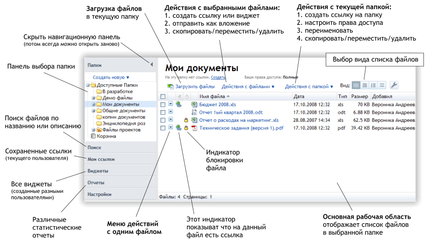 |
|
|
Добавление файлов
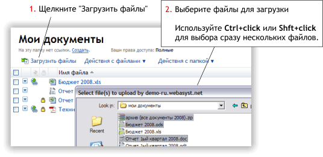
Наш загрузчик позволяет легко добавить сотню файлов в вашу интернет-папку с помощью, буквально, пары щелчков. Во время загрузки вы можете продолжать работать с другими файлами в текущей папке, при этом следить за процессом загрузки по прогресс-бару, который отображается над списком файлов. В любой момент процесс загрузки можно отменить.
Общее количество файлов, которое вы можете загрузить, ограничено настройками вашего тарифного плана и квотой, которая устанавливается администратором. Чтобы посмотреть распределение занятого места на диске по пользователям, щелкните Отчет -> Дисковое пространство в панели инструментов.
ПРИМЕЧАНИЕ: Пользователи с уровнем прав Чтение не имеют доступа к функции загрузки файлов в данной папке. |
|
|
Создание и обмен ссылками на файлы
WebAsyst Файлы позволяют вам быстро создать веб-страницу, на которой будут доступны для скачивания один или несколько выбранных файлов, или все файлы заданной папки. Ссылку на такую страницу (адрес страницы) можно отправить по электронной почте вашим коллегам, опубликовать в блоге или на сайте. |
|
|
Создание ссылки на один файл
Щелкните по меню действий с файлом (голубая кнопка со стрелкой):
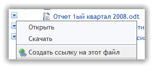
Выберите команду «Создать ссылку на этот файл». Адрес ссылки (URL) сразу появится прямо в панели меню:
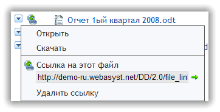
Щелкните по значку зеленой стрелки, чтобы открыть ссылку в новом окне. Или скопируйте и вставьте адрес ссылки в свою программу электронной почты или мгновенных сообщений, чтобы отправить ссылку друзьям. |
|
|
Создание ссылки на папку
Щелкните меню «Действия с папкой» и выберите команду «Создать ссылку на папку». Адрес ссылки (URL) сразу появится в панели меню, а также в строке под заголовком папки:
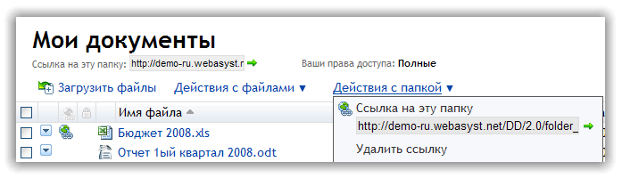
Щелкните по значку зеленой стрелки, чтобы открыть ссылку в новом окне. Или скопируйте и вставьте адрес ссылки в свою программу электронной почты или мгновенных сообщений, чтобы отправить ссылку друзьям. |
|
|
Создание ссылки на выбранные файлы
Выберите файлы, которые вы хотите сделать доступными по ссылке.
Вы можете сделать поиск и выбрать файлы в результатах поиска.
Щелкните меню «Действия с файлами» и выберите команду «Создать ссылку на выбранные файлы». Ссылка сохранится и будет доступна в секции «Мои ссылки» в панели слева.
Адрес ссылки можно отправить по электронной почте прямо со страницы просмотра ссылки. Щелкните кнопку «Отправить» наверху, под заголовком ссылки, и в форме отправки сообщения введите адреса получателей и, при необходимости, тему и текст сообщения.
Используйте меню «Вид» для выбора вида списка файлов на странице, которая будет открываться по ссылке:
- Таблица: атрибуты файла отображаются в различных колонках.
- Список: удобная опция для одновременного отображения типовых значков с названием файла и его полным описанием.
- Эскизы файлов: отображает эскизы (маленькие изображения) и описания файлов. Отличная опция для фотоальбома, в котором каждое изображение имеет описание.
- Плитка: отображает только эскизы рядом друг с другом. Подходит для просмотра большой коллекции изображений.
По умолчанию адрес каждой новой ссылки заканчивается бессмысленной последовательностью символов, например a9fm7pXo. Щелкните Изменить адрес ссылки, чтобы придать более значимое и легко запоминающееся окончание адресу, например «animals» в этой ссылке: http://demo./files/animals. ВНИМАНИЕ: функция Изменить адрес ссылки доступна только пользователям онлайн-сервисов WebAsyst.
Чтобы изменить название ссылки, щелкните по заголовку. Введите новое название и нажмите кнопку Сохранить. |
|
|
Отправка файлов как вложений
Откройте меню действий с одним файлом или выберите несколько файлов и щелкните по меню «Действия с файлами». Выберите команду «Отправить как вложение». В форме отправки сообщения введите адреса получателей и, при необходимости, тему и текст сообщения. Нажмите кнопку Отправить.
ВНИМАНИЕ: Отправка файлов большого размера как вложений не рекомендуется. Вместо этого создайте ссылку на файл(ы) и отправьте только ссылку. Это гораздо быстрее и удобнее для вас и для получателей. |
|
|
Предоставление доступа к файлам другим пользователям
Вы можете работать с документами совместно с другими пользователями. WebAsyst Файлы позволяют настроить для каждой папки один из следующих уровней доступа отдельным пользователям и/или группам пользователей:
- Чтение — пользователь может открывать и скачивать файлы
- Запись — пользователь может добавлять/удалять файлы и изменять описание файлов
- Папка — пользователь может выполнять любые действия с файлами, а также изменять свойства папки, создавать и настраивать вложенные папки
Для настройки доступа, щелкните меню Действия с папкой -> Настроить права доступа. Вы можете настроить права индивидуально для каждого на закладке Пользователи, или использовать закладку Группы для настройки прав для групп пользователей.
При установке прав доступа применяется комбинация персональных и групповых прав, как в примере ниже:
| Персональные права |
Групповые права |
Результирующие права |
| нет прав |
Чтение |
Чтение |
| Запись |
Запись |
Запись |
| Чтение |
Полные |
Полные |
ПРИМЕЧАНИЕ: Настраивать права может только такой пользователь, который имеет Полный доступ к данной папке, а также доступ к разделу Пользователи. |
|
|
Онлайн-редактирование
Вы можете редактировать файлы следующих типов непосредственно в вашем аккаунте, используя сервис Zoho:
- TXT - простой текстовый файл
- DOC - документ MS Word
- XLS - электронная таблица MS Excel
- ODT - документ OpenOffice
- ODS - электронная таблица OpenOffice spreadsheet
Как это работает
Откройте меню действий с файлом и выберите команду Редактировать онлайн. Файл будет отправлен на сервер Zoho и открыт в окне онлайн-редактора, соответствующего типу выбранного файла. Чтобы сохранить изменения, нужно щелкнуть по кнопке Сохранить в редакторе Zoho, обновленный файл будет отправлен обратно в ваш аккаунт WebAsyst.
ВНИМАНИЕ: Функция онлайн-редактирования использует сторонний сервис. Если по соображениям безопасности вы хотите выключить эту функцию, щелкните Настройки -> Онлайн редактирование и выключите флажок «Разрешить онлайн-редактирование с использованием сервисов Zoho». |
|
|
Работа с папками и файлами
Файлы организованы в папки и подпапки. Щелкните по ветке «Доступные папки» в панели «Папки», чтобы открыть список всех папок, к которым вы имеете доступ. Для каждой папки в этом списке показаны ваши права и количество файлов.
Щелкните по названию папки, чтобы перейти в нее. В зависимости от ваших прав в данной папке, вы можете добавлять файлы, копировать/перемещать/удалять файлы, или создавать вложенные папки и выполнять с ними различные действия, в том числе настраивать права другим пользователям.
Наиболее частые действия с папками и файлами описаны ниже. |
|
|
Добавление новой папки
Щелкните Создать новую в панели папок и выберите, хотите ли вы создать корневую папку, или подпапку (вложенную) в текущей папке.
ВНИМАНИЕ: Для создания корневой папки вы должны иметь соответствующий уровень доступа, установленный администратором вашего аккаунта в разделе Пользователи. Для создания вложенной папки, необходимо иметь Полные права в текущей папке. |
|
|
Копирование/Перемещение папок
Перейдите в папку, которую вы хотите скопировать или переместить. Щелкните меню «Действия с папкой» и выберите нужную команду.
ВНИМАНИЕ: Вы должны иметь Полные права в папке-приемнике, а также в папке-источнике, из которого вы перемещаете текущую папку. |
|
|
Копирование/Перемещение файлов
Откройте меню действий с файлом, или выберите файлы и щелкните меню «Действия с файлами». Выберите нужную команду.
ВНИМАНИЕ: Вы должны иметь уровень прав Запись или Полные в папке-приемнике, а также в папке-источнике, из которого вы перемещаете файлы. |
|
|
Изменение описания файла
Чтобы добавить описание, откройте меню действий с файлом и щелкните <добавить описание>. Появится окно для ввода описания прямо в панели меню.
Чтобы изменить существующее описание, откройте меню действий с файлом и щелкните в любом месте в тексте описания для перехода в режим редактирования.
Еще проще просматривать и редактировать описания, если у вас выбран такой вид списка файлов, в котором описание отображается непосредственно в списке. Для редактирования просто щелкните в любом месте в области текста описания. Сделайте изменения и нажмите Сохранить. |
|
|
Блокировка файлов
Если пользователи Дима и Саша работают над редактированием одного и того же файла, то им следует использовать механизм блокировки, чтобы избежать одновременной перезаписи файла. Дима может заблокировать файл и редактировать его не опасаясь, что Саша сохранит свои изменения раньше. Значок «замочек» показывает заблокированные файлы:
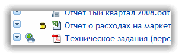
Чтобы заблокировать файл, выберите команду «Заблокировать» в меню действий с файлом. Для снятия блокировки, щелкните по значку «замочек» и выберите команду «Разблокировать».
ВНИМАНИЕ: Пользователь с Полными правами в данной папке может перезаписывать файлы, заблокированные другим пользователями, или снимать с них блокировку. |
|
|
Сжать/Распаковать ZIP файл
- Выберите файлы, которые вы хотите поместить в ZIP архив, и щелкните Действия с файлами -> Сжать в ZIP и сохранить. Созданный ZIP файл будет сохранен в текущей папке.
- Щелкните Действия с папкой -> Сжать в ZIP и сохранить для копирования в архив всего содержимого текущей папки вместо с вложенными папками.
Созданный ZIP файл можно скачать на локальный компьютер или перенести в другую папку для архивного хранения.
Для извлечения файлов из ранее загруженного ZIP архива, выберите в меню действий с файлом команду Извлечь из ZIP. Все файлы и вложенные папки, содержащиеся в ZIP архиве, будут распакованы в текущую папку.
ВНИМАНИЕ: В «Результатах поиска» функции работы с ZIP файлами выключены. Вы должны перейти в папку, где располагается ZIP файл, для того чтобы распаковать его. |
|
|
Удаление файлов и папок
Выберите команду Удалить в меню действий с файлом, или выберите несколько файлов и щелкните Действия с файлами -> Удалить.
Чтобы удалить папку целиком, щелкните Действия с папкой -> Удалить.
Файлы и папки физически не удаляются из вашего аккаунта. Вместо этого они помечаются как «удаленные» и хранятся в специальной Корзине, из которой могут быть восстановлены, т. е. скопированы обратно в любую доступную папку.
Чтобы восстановить «удаленные» файлы, или окончательно удалить их, перейдите в Корзину, выберите файлы и/или папки и нажмите кнопку Восстановить или Удалить.
ВНИМАНИЕ: Файлы и папки, удаленные разными пользователями, помещаются в единую Корзину. Для доступа к Корзине вы должны иметь специальное разрешение, установленное администратором вашего аккаунта в разделе Пользователи. |
|
|
История версий
Для каждого файла сохраняются его предыдущие версии с информацией об авторе, дате и времени изменений.
Последняя версия файлов всегда видна в главном окне в списке файлов. Чтобы открыть старые версии файла, выберите в меню действий с файлом команду «Старые версии».
Ненужные версии файлов можно выбрать и удалить, находясь в списке старых версий. |
|
|
Настройка вида списка файлов
Вы можете вывести список файлов по разному. В зависимости от типов файлов в данной папке, наличия описаний, или просто исходя из собственных предпочтений, можно выбрать один из следующих видов использую переключатель Вид:
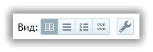
| 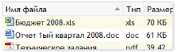 |
Таблица — атрибуты файла выводятся в отдельных колонках таблицы: Название файла, Тип, Размер и т.д. Вы можете отсортировать список по любой колонке просто щелкнув по ее заголовку. |
| 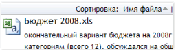 |
Список — удобное представление для файлов документов с описаниями. Функция сортировки также доступна для такого вида. |
| 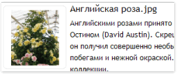 |
Эскизы файлов — отображает эскиз (маленькое изображение) и описание файла. Отличное представление для коллекции файлов изображений с аннотациями. |
| 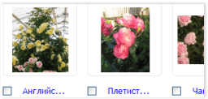 |
Плитка — показывает только эскизы файлов. Удобный способ для представления больших коллекций файлов изображений. |
Щелкните по правой кнопке в панели Вид для настройки следующих параметров вида:
- Количество файлов, которые отображаются на одной странице
- Количество символов в описании файлов, которое выводится в представлениях Список и Эскизы файлов. Это ограничение полезно, если у вас большие описания файлов. При этом для больших описаний выходящих за рамки установленных ограничений будет появляться ссылка [еще...], по которой можно открыть полный текст описания.
Настройки вида можно применить только к текущей папке, или ко всем доступным папкам сразу. |
|
|
Использование виджетов
Виджет — это часть контента или инструмент, который вы можете встроить в свой веб-сайт или блог. В основном, виджеты позволяют вам отправлять данные с внешней веб-страницы в ваш ВебАсист-аккаунт или опубликовать содержимое вашего аккаунта на внешней веб-странице.
Вы можете создать виджеты следующего типа:
Онлайн Папка: Показывает список файлов в указанной папке. Позволяет открыть и скачать файл, а также добавить новый файл в папку.
Список файлов: Выводит список выбранных файлов или всю папку в настраиваемом формате с кнопкой Скачать. Простейший способ опубликовать коллекцию файлов на вашем сайте. |
|
|
Создание нового виджета
Виджет «Список файлов» можно создать для множества выбранных файлов или для папки целиком. Если вы хотите чтобы в виджете появлялись только некоторые файлы, выберите их и щелкните Действия с файлами -> Создать виджет. Если вы хотите поместить в виджет все файлы текущей папки, то щелкните Действия с папкой -> Создать виджет.
Виджет «Онлайн Папка» может быть создан только для папки целиком. Щелкните Действия с папкой -> Создать виджет.
Все созданные виджеты размещаются в секции Виджеты в навигационной панели слева. Перейдите в эту секцию для настройки виджетов, получения кода для встраивания виджетов в веб-страницы, или для удаления ненужных виджетов. |
|
|
Настройка виджета
Вы можете изменять различные параметры виджета, чтобы сделать его оформление подходящим для веб-страницы, на которой вы хотите его разместить. Например, для виджета «Список файлов» вы можете выбрать вид Таблица или Список, указать видимые колонки, размер значка и т.д.
Чтобы настроить виджет, перейдите в секцию Виджеты в навигационной панели. Выберите виджет и щелкните кнопку Настроить. Сделайте изменения и нажмите Сохранить. Изменения будут немедленно применены и отобразятся в области предварительного просмотра. |
|
|
Встраивание виджета
Есть два способа поместить виджет на вашу веб-страницу или в блог:
- Скопируйте и вставьте HTML код, который будет исполнять ваш виджет в области IFRAME.
- Поместите ссылку на вашу веб-страницу, по которой виджет будет открываться в отдельном окне.
Чтобы получить HTML-код или ссылку на виджет, перейдите в секцию Виджеты в навигационной панели, выберите виджет и нажмите кнопку Встроить. |
|